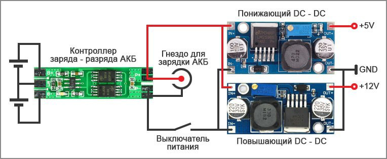

Итак, начнем, пожалуй, с конструкции и принципа работы пылесоса.
Из схемы видно, что пылесос оборудован 6 инфракрасными датчиками. Они срабатывают при приближении пылесоса к препятствию, давая комманду остановиться и развернуться не врезаясь в него. Если же ни один из 6 датчиков не сработал и робот пылесос сталкивается с препятствием, то тогда срабатывает один из 2 выключателей, которые соединяют бампер (в котором находятся ИК датчики) и корпус робота.
Внимательные читатели заметили, что на схеме не показано питание робота. Тут решение вполне стандартное, использованы 4 аккумулятора формата 18650, подключенных последовательно две пары, через контроллер заряда-разряда АКБ. Далее с контроллера через выключатель подсоединены повышающий и понижающий DC-DC преобразователи. + 12 вольт питает моторы колес и моторы передних щеток. +5 вольт питает всю остальную электронику. Турбина питается от 7 — 8 вольт, так что для нее преобразователь не нужен. Выглядит это так:
В итоге список основных компонентов выглядит так: ардуино про мини L298N Motor Driver Module колеса повышающий конвертер понижающий конвертер ИК датчик 6 шт контроллер заряда-разряда крыльчатка для турбины (около 200 руб) ПВХ для изготовления корпуса АКБ 18650 4 шт. 2 моторчика для щеток (модель не сильно важна) 1 моторчик для турбины 2 выключателя столкновения.
Ну и небольшое интервью с автором этого проекта. Автора зовут Дмитрий Иванов, живет в г. Сочи.
— Дмитрий, как пришла идея сделать робот-пылесос?
— Увидел на ютубе видео, где робот-пылесос делал уборку, захотел себе купить такой, но когда посмотрел цену, то подумал и решил делать сам. Сначала сделал первую версию робота, у него были слабые моторы на колесах, несъемный контейнер для мусора и пыли, мало датчиков препятствия и я сделал вторую версию, лишенную этих недостатков.
— Сколько в итоге денег и времени ушло на его изготовление?
«Примерно 5000 тыс. руб. плюс два месяца работы»
— Что было самым сложным в процессе постройки?
Самое сложное сделать корпус и турбину, подогнать все детали.
— Есть планы продолжать совершенствование робота?
В планах покрасить корпус, сделать несколько режимов уборки, подключить блютус модуль и написать программу для телефона на андроиде (управление режимами, ручное управление, отображение заряда АКБ). Ну и сделать под пылесосом синюю подсветку для красоты.